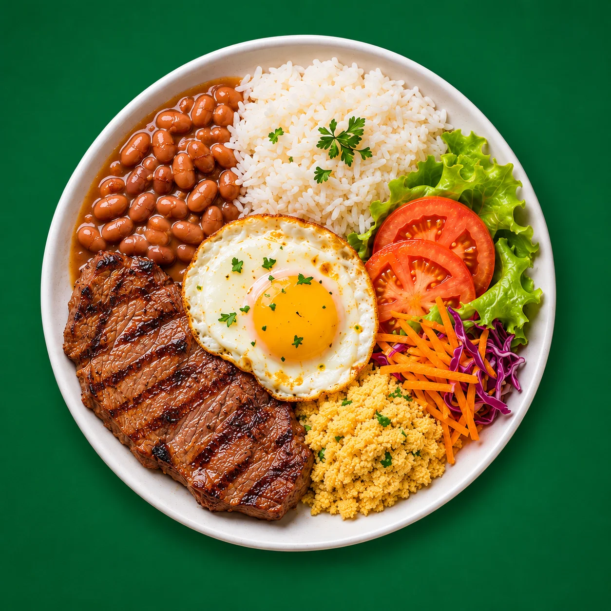

Prato do DiaLoja demonstrativa
Seu almoço.
Completo de
verdade.

Uma refeição caprichada para acompanhar seu dia.
Avaliação de exemploBairro de exemploHorário de exemplo
Modelo demonstrativo • Imagem ilustrativa

Uma refeição caprichada para acompanhar seu dia.